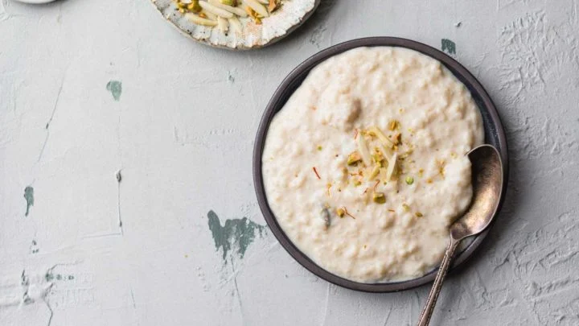

This Instant Pot Kheer (Pakistani & Indian Rice Pudding) recipe has the classic flavor of old-fashioned kheer without the fuss. This is a restaurant-inspired recipe that's been rigorously tested and perfected until I can confidently call it the BEST Instant Pot kheer
